Avengers: Infinity War (2018)
| Movie | Release Date | Poster |
|---|---|---|
| Avengers: Infinity War PG-13 · 2h 29m · superhero · science fiction · action Peter Parker joins Iron Man, Doctor Strange, and the Guardians of the Galaxy against Thanos on Titan. | 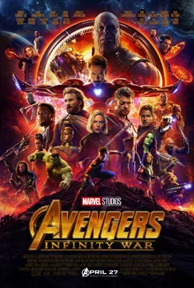 |
| Trailer |
|---|
| Rotten Tomatoes | Metacritic | IMDb |
|---|---|---|
| 85% | 68/100 | View on IMDb |
| Overview |
|---|
Avengers: Infinity War is a 2018 American superhero film based on the Marvel Comics superhero team the Avengers. Produced by Marvel Studios and distributed by Walt Disney Studios Motion Pictures, it is the sequel to The Avengers (2012) and Avengers: Age of Ultron (2015), and the 19th film in the Marvel Cinematic Universe (MCU). Directed by Anthony and Joe Russo and written by Christopher Markus and Stephen McFeely, the film features an ensemble cast including Robert Downey Jr., Chris Hemsworth, Mark Ruffalo, Chris Evans, Scarlett Johansson, Benedict Cumberbatch, Don Cheadle, Tom Holland, Chadwick Boseman, Paul Bettany, Elizabeth Olsen, Anthony Mackie, Sebastian Stan, Danai Gurira, Letitia Wright, Dave Bautista, Zoe Saldaña, Josh Brolin, and Chris Pratt. In the film, the Avengers and the Guardians of the Galaxy attempt to stop Thanos (Brolin) from collecting the six powerful Infinity Stones as part of his quest to kill half of all life in the universe. Full plot (spoilers)Having acquired the Power Stone—one of six Infinity Stones —from the planet Xandar , Thanos and his lieutenants— Ebony Maw , Cull Obsidian , Proxima Midnight , and Corvus Glaive —intercept the spaceship carrying the survivors of Asgard 's destruction. After subduing Thor , Thanos extracts the Space Stone from the Tesseract , overpowers the Hulk , kills Loki , and fatally wounds Heimdall . Before dying, Heimdall sends Hulk to Earth using the Bifröst . Thanos and his lieutenants leave, destroying the ship. Hulk crash-lands in the Sanctum Sanctorum in New York City, reverting to the form of Bruce Banner. He warns Stephen Strange and Wong about Thanos's plan to destroy half of all life in the universe, and they recruit Tony Stark . Maw and Obsidian arrive to retrieve the Time Stone from Strange, drawing Peter Parker 's attention. Maw, unable to take the Time Stone due to Strange's enchantment, captures him. Stark and Parker sneak aboard Maw's spaceship while Wong stays behind to guard the Sanctum. The Guardians of the Galaxy respond to the Asgardian ship's distress call and rescue Thor. Thor surmises that Thanos is after the Reality Stone, which Taneleer Tivan possesses on Knowhere . He travels with Rocket and Groot to Nidavellir to enlist the dwarf king Eitri 's aid in creating the battle-axe Stormbreaker . Peter Quill , Gamora , Drax , and Mantis travel to Knowhere, finding Thanos already has the Reality Stone. Thanos kidnaps Gamora, who discloses the Soul Stone's location to save Nebula from torture. On Vormir , the Stone's keeper, Red Skull , tells Thanos that he can only acquire it by sacrificing someone he loves. Thanos sacrifices Gamora, earning the Stone. Midnight and Glaive ambush Wanda Maximoff and Vision in Edinburgh to retrieve the Mind Stone, which is in Vision's forehead. Steve Rogers , Natasha Romanoff , and Sam Wilson rescue them and they take shelter with James Rhodes and Banner at the Avengers Compound . Vision asks Wanda to destroy him and the Mind Stone to keep it from Thanos, but she refuses. The group travels to Wakanda , which Rogers believes has the resources to remove the Stone without killing Vision. Nebula escapes captivity and asks the remaining Guardians to meet her on Thanos's destroyed homeworld, Titan . Stark and Parker kill Maw and rescue Strange. The trio crash-lands on Titan, where they meet Quill, Drax, and Mantis. Using the Time Stone, Strange views millions of possible futures, seeing only one in which the Avengers win. The group formulates a plan to subdue Thanos and remove the Infinity Gauntlet, with which he safely houses and wields the Stones. Thanos appears, justifying his plans as necessary to guarantee the survival of an overpopulated universe. Nebula arrives soon after and helps the others subdue Thanos, but deduces that Thanos has killed Gamora. Enraged, Quill attacks Thanos, allowing him to break the group's hold and overpower them. Thanos grievously wounds Stark, but Strange offers the Time Stone in exchange for sparing Stark's life. In Wakanda, Rogers reunites with Bucky Barnes before Thanos' army invades. The Avengers, along with T'Challa and the Wakandan forces, mount a defense while Shuri works to extract the Mind Stone from Vision. Unable to summon the Hulk, Banner fights in Stark's Hulkbuster armor . Thor, Rocket, and Groot arrive to reinforce the Avengers. Together they kill Midnight, Obsidian, and Glaive, and rout Thanos's army. Shuri cannot complete the extraction before Thanos arrives on the field; the Avengers and their allies fail to stop him from reaching Vision. Vision convinces a reluctant Wanda to destroy him and the Mind Stone, but Thanos uses the Time Stone to reverse her actions, rip the stone from Vision's forehead, and complete the Gauntlet. Thor severely wounds Thanos with Stormbreaker, but Thanos activates the completed Gauntlet by snapping his fingers before teleporting away. Half of all life across the universe disintegrates, including Barnes, T'Challa, Groot, Wanda, Wilson, Mantis, Drax, Quill, Strange, Parker, Maria Hill , and Nick Fury , the last of whom sends an emergency signal on a modified pager before disintegrating. Stark and Nebula remain stranded on Titan while Banner, M'Baku , Okoye , Rhodes, Rocket, Rogers, Romanoff, and Thor are left on the Wakandan battlefield. Meanwhile, Thanos watches a sunrise on a remote planet. |
| Actor | Character | Photo |
|---|---|---|
| Robert Downey Jr. | Tony Stark / Iron Man The benefactor of the Avengers who is a self-described genius, billionaire, playboy, and philanthropist with electromechanical suits of armor of his own making. |  |
| Chris Hemsworth | Thor An Avenger and the king of Asgard , based on the Norse mythological deity of the same name . | 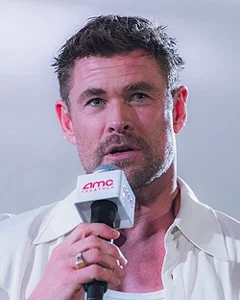 |
| Mark Ruffalo | Bruce Banner / Hulk An Avenger and genius scientist who, because of exposure to gamma radiation , typically transforms into a monster when enraged or agitated. | 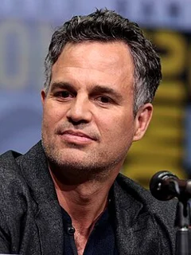 |
| Chris Evans | Steve Rogers / Captain America The fugitive leader of the non-regulation faction of Avengers. | 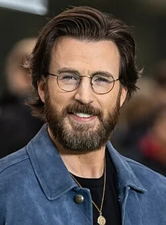 |
| Scarlett Johansson | Natasha Romanoff / Black Widow A highly trained spy, member of Rogers' faction of Avengers, and former agent of S.H.I.E.L.D. | 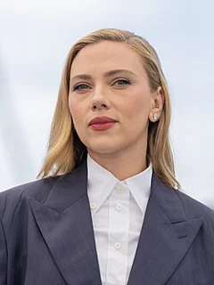 |
| Benedict Cumberbatch | Dr. Stephen Strange A former neurosurgeon who, after a car accident that led to a journey of healing, discovered the hidden world of magic and alternate dimensions and became a Master of the Mystic Arts . | 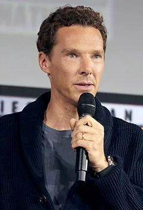 |
| Don Cheadle | James "Rhodey" Rhodes / War Machine An officer in the U.S. |  |
| Tom Holland | Peter Parker / Spider-Man A teenager, Avenger and Stark's protégé who received spider-like abilities after being bitten by a radioactive spider. |  |
| Chadwick Boseman | T'Challa / Black Panther The king of the African nation of Wakanda who gained his enhanced abilities by ingesting the Heart-Shaped Herb. |  |
| Paul Bettany | Vision An android and Avenger created using the artificial intelligence J.A.R.V.I.S. |  |
| Elizabeth Olsen | Wanda Maximoff A member of Rogers' faction of Avengers who can harness magic and engage in hypnosis and telekinesis . |  |
| Anthony Mackie | Sam Wilson / Falcon A member of Rogers' faction of Avengers and former pararescueman trained by the military in aerial combat using a specially designed wing pack. |  |
| Sebastian Stan | Bucky Barnes / Winter Soldier An enhanced soldier and Rogers' ally and best friend who reemerged as a brainwashed assassin after being thought to have been killed in action during World War II. |  |
| Tom Hiddleston | Loki Thor's adopted brother, based on the Norse mythological deity of the same name . | 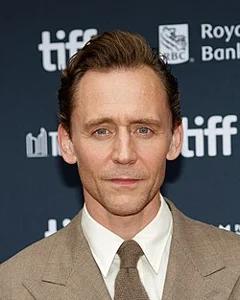 |
| Idris Elba | Heimdall The all-seeing, all-hearing Asgardian and former sentry of the Bifröst Bridge , based on the Norse mythological deity of the same name . | 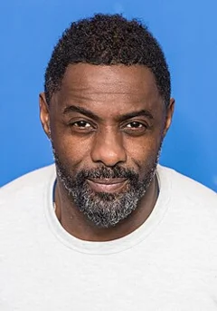 |
| Peter Dinklage | Eitri King of the Dwarves of Nidavellir , and weaponsmith, based on the Norse mythological dwarf of the same name . | 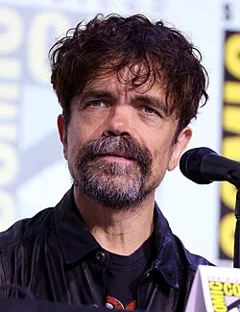 |
| Benedict Wong | Wong A Master of the Mystic Arts, tasked with protecting some of Kamar-Taj 's most valuable relics and books. |  |
| Pom Klementieff | Mantis A member of the Guardians with empathic powers. | No photo |
| Karen Gillan | Nebula An adopted daughter of Thanos who was raised with Gamora as siblings. | 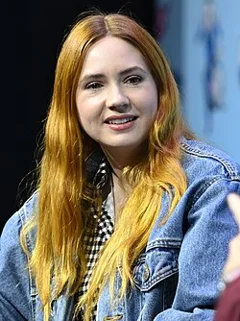 |
| Dave Bautista | Drax the Destroyer A member of the Guardians and warrior in search of vengeance against Thanos for killing his family. | 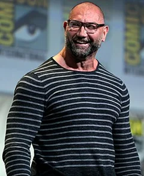 |
| Zoe Saldaña | Gamora A member of the Guardians who is an orphan from an alien world and was subsequently raised by Thanos, and is seeking redemption for her past crimes. | 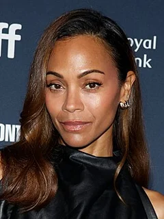 |
| Vin Diesel | Groot A member of the Guardians who is a tree-like humanoid. | 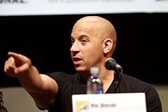 |
| Bradley Cooper | Rocket A member of the Guardians who is a genetically engineered raccoon -based bounty hunter, mercenary, and master of weapons and battle tactics. |  |
| Gwyneth Paltrow | Pepper Potts Stark's fiancée and the CEO of Stark Industries . |  |
| Benicio del Toro | Taneleer Tivan / The Collector One of the Elders of the Universe who is an obsessive keeper of the largest collection of interstellar fauna, relics, and species of all manner in the galaxy. | 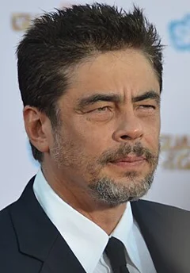 |
| Josh Brolin | Thanos An intergalactic warlord from Titan who seeks all six Infinity Stones to destroy half of all life for the sake of "re-balanc[ing] the universe". |  |
| Chris Pratt | Peter Quill / Star-Lord The half-human, half- Celestial leader of the Guardians who was abducted from Earth as a child and raised by a group of alien thieves and smugglers called the Ravagers . | 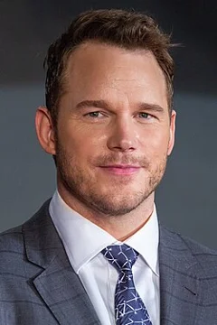 |
| Samuel L. Jackson | Nick Fury | No photo |
| Cobie Smulders | Maria Hill | No photo |
| Danai Gurira | Okoye / Okoye | No photo |
| Sean Gunn | Rocket / On-Set Rocket | No photo |
| Stan Lee | Bus Driver | No photo |
| Letitia Wright | Shuri / Shuri | No photo |
| Winston Duke | M'Baku / M'Baku | No photo |
| Florence Kasumba | Ayo / Ayo | No photo |
| Ross Marquand | Johann Schmidt / Red Skull (Stonekeeper) | No photo |
| Terry Notary | Cull Obsidian / Groot / Cull Obsidian / On-Set Groot | No photo |
| Tom Vaughan-Lawlor | Ebony Maw / Ebony Maw | No photo |
| Carrie Coon | Proxima Midnight / Proxima Midnight | No photo |
| Michael James Shaw | Corvus Glaive / Corvus Glaive | No photo |
| William Hurt | Thaddeus Ross / Secretary of State Thaddeus Ross | No photo |
| Stephen McFeely | Secretary Ross' Aides | No photo |
| Robert Pralgo | Thanos Reader | No photo |
| Monique Ganderton | Proxima Midnight / On-Set Proxima Midnight | No photo |
| Jacob Batalon | Ned Leeds / Ned | No photo |
| Tiffany Espensen | Cindy Moon / Cindy | No photo |
| Isabella Amara | Sally Avril / Sally | No photo |
| Ethan Dizon | Brian McKeever / Tiny | No photo |
| Ariana Greenblatt | Gamora / Young Gamora | No photo |
| Ameenah Kaplan | Gamora's Mother | No photo |
| Michael Anthony Rogers | Secretary Ross' Aides | No photo |
| Aaron Lazar | Doctor Strange Double | No photo |
| Olaniyan Thurmon | Teenage Groot Reader | No photo |
| Blair Jasin | Street Pedestrian #1 | No photo |
| Matthew Zuk | Street Pedestrian #2 | No photo |
| Laura Miller | Scottish News (STV) Reporter | No photo |
| Kerry Condon | Features of the Marvel Cinematic Universe / Voice of Friday | No photo |
| Detail | Value |
|---|---|
| Directed by | Anthony Russo, Joe Russo |
| Written by | Christopher Markus, Stephen McFeely |
| Produced by | Kevin Feige |
| Music by | Alan Silvestri |
| Cinematography | Trent Opaloch |
| Edited by | Jeffrey Ford |
| Production companies | Marvel Studios, Walt Disney Studios Motion Pictures |
| Distributed by | Walt Disney Studios Motion Pictures, Warner Bros. Entertainment, SamFilm, United International Pictures, Disney+ |
| Running time | 149 minutes |
| MPAA rating | PG-13 |
| Budget | $400 million |
| Box office | $2.0 billion |
Overview, plot, and cast descriptions are from Wikipedia (CC BY-SA 4.0). Credits, ratings, and box office are from Wikidata.